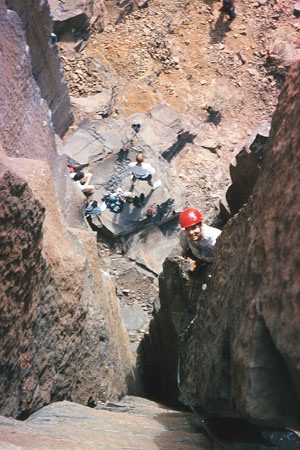
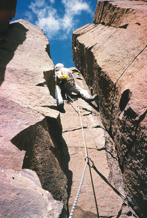
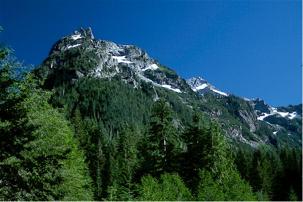
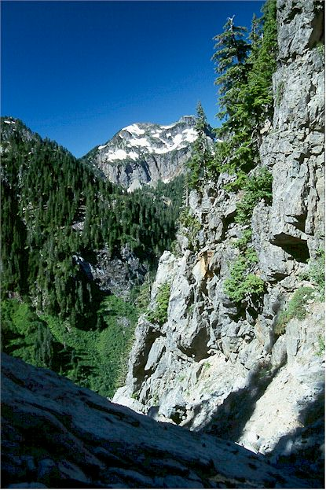
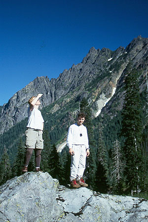
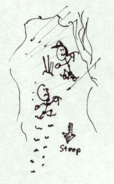
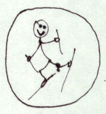

Short Reports 1999
Silver Peak Skiing, 12/30/1999
I skied up FS Road 9070, reaching Nordic Pass around 10:30 am. At the pass, the fog cleared, and I had great views of peaks such as Chair, the Tooth, Snoqualmie, Catherine and Silver. I skied up the clearcuts of Ollie Meadows, then two Channel 4 helicopters buzzed 60 feet over my head. They hovered in the area for a while, then continued over the pass to the north. Would I be on the news? Finally, I abandoned the skis and climbed to about 5000 feet on a west shoulder of Silver Peak, reaching a small, pretty basin. The snow was very icy, so I retraced my steps, and had a fun ski down the meadow, then a looong ride back to the flats.
Stevens Pass Skiing, 12/27/1999
I didn’t have enough before, so I went back and tackled more of the easier blue runs. There still hadn’t been any new snow, so things were getting hard and icy! I had a great time, but my stuffed-up sinuses (small cold) hurt as I drove down from the pass. On the way back, I checked out the road to Mt. Persis, finding it drivable to above 3000 feet to a pretty valley.
Stevens Pass Skiing, 12/25/1999
Kris and I had a great time and alternating blue sky/fog today. She did very well on the green runs, as did I. We learned how to fall properly!
Snoqualmie Pass Skiing, 12/19/1999
Before the lifts opened, I skinned up and skied up and down a short section of the lift. Soon, an employee of the ski area came and told me to leave. I half-skied half-fell down the mountain under his watchful eye. I then went to the level ski trail along Lake Kacheless, giving myself a painful blister on the right heel.
Mt. Baker Skiing, 11/27/1999
Kris wore snowshoes and I wore my new skis. We tromped around off the lifts, then I made a few fun turns and falls in some nice deep powder. It was fun to see this area for the first time. Lots of snow for November!
Mount Si, 11/20/1999
Kris and I planned to get up at 5 am, but actually left the house at 8, a much more sensible choice! We hiked up, finding umbrellas useful as recent snow melted from the trees above us, dropping carpet bombs on hapless toilers. We turned around at the 3 mile marker when the path become slushy and snowy.
Paradise Skiing, 11/14/1999
Peter and I hiked up in miserable rain to an area below Panorama Point for some telemark skiing. Within a few hours, there was quite a crowd of free-styling snowboarders and skiers doing some excellent telemark turns. We got back to the car soaking wet in the afternoon, and were interviewed on channel 4 news about the 2 missing climbers.
Mount Si, 10/24/1999
Finally Kris and I had a full day for this trip, and a beautiful day it was! It was cold and damp in the forest, and infrequent spatterings of sun kept us moving to the top, where we could rest in the sun, and survey the views. It was Kris’s first time to the top of the trail, and we held a small party for two. We saw many people and dogs going up and down. All manner of people: serious and smiling, tricked out in plastic and chalk bags, or ready for a city stroll.
Bandera Mountain, 10/21/1999
We walked the 1.5 mile abandoned road and about 1/2 mile of the trail this afternoon. The views were wonderful, and I got to show Kris a new trail.
Gem Lake, 10/16/1999
Peter and I decided to climb the West Ridge of Snoqualmie Peak. We quickly hiked up the Snow Lake trail on an ambitious pre-dawn start. As the sky lightened, we turned onto the west ridge, following a nice trail. Within 500 feet, the trail ended at a cliff, with imposing spires beyond. Not prepared for anything harder than class 3, we didn’t bring a rope for this 5th class terrain! The only way around would be to abandon the ridge, descending hundreds of feet down one side or the other. Oh well! So we hiked to Gem Lake and went up a small peak on the right. We had an awesome view of the North Ridge of Kaleetan Peak, and vowed to climb this later! Great views of the Middle Fork country, and mountains to the north all the way to Mt. Baker. On the way back, I slipped on an icy log and got a small cut on the left hand. Then we hurried so Peter could catch a football game. It was fun and educational!
Snow Lake, 9/29/1999
Hoping to run into friend Matt L., Kris and I walked to Snow Lake after work. In our tennis shoes, just carrying a bottle of water, we were accosted for heading up “so late” by one descending party. At the overlook for the lake, we looked for signs of Matt’s WTA work party but saw no one. It was still a wonderful hike, and our first visit to this popular area. I pointed out the Tooth to Kris.
Vantage Climbing, 9/26/1999
Peter and I climbed “3 Virgins and a Mule”, a trad 5.7 route that was a little creepy with our small rack, oriented for the Tooth (but it was raining/snowing there). I brought Peter up to a nut belay halfway up the pitch so he could clean gear for me to continue! Peter led an awesome 5.8, then I led “Clip ‘em or Skip ‘em” just to the right. A fun alternative to giving up after rain at the Tooth.


Hidden Lake Peaks, 9/25/1999
The drive was long, but we had great views of Johannesburg Mountain near the end, and clear blue skies. However, Kris wasn’t feeling very well, so we hiked about a mile and turned around. Oh well, another time!
Mount Si, 9/22/1999
A great after work hike. Kris and I made it to the 3 mile mark before turning around due to darkness.
East Wilman’s Spire Attempt, 9/12/1999
Peter, Bob and I rode bikes up the Monte Cristo Road, impressed with how much this sped the process of getting there! Another climber pulled up as we locked our bikes, and laughed at the notion of approaching the spire via the brushy west slope. “No one goes that way anymore!” We weren’t prepared for steep snow, so we headed up anyway. We found a new trail through brush, then emerged into a long rocky gully that led up the mountain. Navigating remnant house-sized blocks of snow, we found evidence of a former tram-line with a long rusted cable. The rock got better, but steeper, and finally we were climbing very exposed slabby rock. Peter climbed a 5th class slab and looked around a corner, finding only steeper slopes above. With still 1000 feet to get to the base of the darn climb, we turned around, beginning a long, tedious descent down the rotten gully. The scenery was pretty, and we could see that the trail through brush had been created to access a little cabin up the valley. A pleasant column of smoke was rising from the chimney. Bob sprained his ankle on the hike down. My bike chain broke on the ride out. Peter towed me with the aid of a long stick. We decided our approach was all wrong back in Monte Cristo when we saw a landmark (The Count of Monte Cristo) we were supposed to pass. We were further up the valley than that.



Blanca Lake, 9/11/1999
Kris and I got to the trailhead around 1:30 pm for this “100 Classic” hike. We switch-backed slowly but steadily up the steep trail. The sky was blue, and we stayed cool in the forest. We were amused but saddened by a party of three, where two were very impatient with one straggler who wasn’t in the same shape. They kept huffing ahead, then waiting impatiently for the increasingly hurt third member who was happy to chug along at her own pace. Finally we passed this unhappy trio, and we soon sitting near the turquoise water of the glacial-fed lake. The bugs were mildly annoying. Heading back, we hastened against darkness, finally using a headlamp on the last mile. Kris and I had a wonderful time!
Mount Si, 9/9/1999
A training hike for Kris, who harbors Rainier ambitions! We went after work and got in 1.5 miles at a steady pace.
Little Si, 9/6/1999
Kris and I left in the late afternoon for this hike. Last year, I scrambled up the other side of the peak, and mistakenly thought the trail couldn’t be more than a mile. Well, it was two pretty steep miles, so after a few fun minutes on top we had to race down, scurrying through the premature darkness in the rain forest below. An evil rotting stump extracted an injury to Kris’s leg, but I pushed it off the trail. We really enjoyed ourselves anyway.
High Rock Lookout, 8/28/1999
Joey, Arwin, Kris and I took this easy hike to a lookout with grand views north to Mt. Rainier. At the dramatic cliffs, we spied a lazy Marmot sunning himself and looking down 1000 feet. He’d saunter away when we approached. We met Bud, the lookout attendant for the last 15 years. We’d seen him on TV, as he was something of a minor celebrity. The old gaffer told tales of long hikes when he was a kid, and was just a really interesting guy. He told us we had behaved well, and gave us a nice goodbye. We caught a beautiful sunset on the way down.
Mt. Forgotten Meadows (Perry Creek), 8/15/1999
I left the trailhead at 8:15 am, and entered the lowering clouds just before Perry Creek Falls. The views to remnant waterfalls across the valley had been great until then. From the Falls, I continued on snow-free trail to the Mt. Forgotten Meadows in increasing rain. My schemes for attaining the summit fizzled in the steady drizzle, and I forgot all about it, my mind as blank and gray as the drabby day. I thought about the second ascent of “Not Stilly, Silly! Peak,” but my limbs were careening down, not up!
Whistler Hiking, 8/4/1999
Kris and I thought this would be fun, with trams taking you to high country hikes above timberline. But the trails were closed due to snow, and the many ominous warnings about (god forbid) walking on snow deterred us from exploring. We did manage a grueling 3000 foot descent hike from the tram’s terminus, hoping to spot bears feasting on berries. Alas, we saw none, but we did get sprayed by dirt from sewage treatment trucks driving up the many dirt roads that the trail crossed. We suffered, but managed to have fun too. However, I would never, ever recommend anyone believe the hype about hiking at Whistler during the summer! It was expensive and very industrial. We couldn’t wait to get home.
Vantage, 7/4/1999
We spent a lazy morning at home, not ready to move until 2 pm, making for possibly the latest start for the drive to Vantage anybody has ever done! We arrived at 4:30, and Kris did very well on her first outdoor climb at the Feathers. We climbed a 5.3 route, and Kris executed her first rappel. Later, we hiked through the Tunnel and I climbed Peaceful Warrior. This is something we should do together more often!
Castle Rock, 6/27/1999
Kris and I met Bob Scoverski and Steve H. at the Castle near Leavenworth for some easy trad climbing on Midway (5.6). Bob led the first pitch up the side of Jello Tower, finding it a bit intimidating but doing an outstanding job nonetheless. Steve followed pretty well on his first rock climb on real rock (right Steve?). Later, I led the top two pitches, doing it in two because of some pretty excessive rope drag (should have used a longer sling down low!). It was warm and sunny, while the west side felt like November. Kris enjoyed watching and comparing us with an amazing British pair, and she saw a kind of scary lead fall on the 5.8 crack on the Tower left of Midway. Everyone was ok though.
Mount Si, 6/6/1999
John and I started up the trail at 2:00 pm, and despite a weird 5 minute rain squall, found ourselves on the summit with views to downtown Seattle. We clambered cautiously on the Haystack, coming down as round pellets of graupel snow came from above, collecting like mothballs in corners. As we headed down, snow turned to gentle rain. Lots of friendly people on the trail.
Kendall Peak Area, 5/23/1999
This was a 4 hour trip to the Snoqualmie Pass area for some snow walking and climbing. I started hiking from the Alpental Road at noon, working my way up the Commonwealth Valley. After a waterfall, I started switch-backing steeply up the mountain on the right. Finally, I came into a basin under what the map shows as Kendall Peak. Ascending on a diagonal, I reached a saddle at 5200 feet. There was a great view across to the real Kendall Peak above the Kendall lakes. I decided to climb the fake Kendall, so followed old snowshoe tracks on steepening snow up to some exposed rocks. Here, I tried to get water from a melting cornice, but my nerve failed me! I continued on to the summit ridge, alarmed by the watery condition of the snow. A dicey traverse was made easier by stamping snow down for deep, exaggerated steps. I turned around 30 feet below the summit because of some exposed 5th class climbing that I knew would be hard to descent. Going down was quick, and for a short cut, I traveled along a ridge and came straight down through forest to the parking area using a compass bearing.
Snoqualmie/Bandera Mountains, 5/16/1999
I climbed about 1000 feet up from the Alpental parking lot, attempting to reach Cave Ridge, and thence to Snoqualmie Mountain. The steep snow and cliffs were more than I felt like dealing with today, so after some careful down-climbing, I headed west for an easier climb of Bandera Mountain. The trail was snowcovered from where it leaves the old roadbed, heading straight up to a ridge. Despite rain, then snow, the trip was enjoyable since I was prepared to get soaking wet! Heavy wind at the summit kept me from lingering, and though a cloud preened in my face, I got a few glimpses of I-90 far below, and a good view of Mason Lake, just below a ridge. 10 minutes of glorious glissading got me off the snow in record time, as I just slid crazily down the fall line. It took me right to where the trail leaves the roadbed! My buttocks were frozen for the next 30 minutes of walking down to the car…
Index climbing - Great Northern Slab, 4/17/1999
My third time to climb Great Northern Slab, this time with Bob S., an amazing climber who has concentrated exclusively on sport routes. This was my chance to show him something new, and he took to it well, placing gear on lead by the third pitch. The rock was getting wet due to increasing rain but the crowds had just arrived when we reached the base. Our rappel rope became stuck, and Jeff (see the skiing trip below) handily showed up from on high to free it. Thanks Jeff!
Barclay Lake, 4/15/1999
There was about a mile of snow to walk before the trailhead, and continual snow on the trail. Despite footprints by the thousands, I saw no one on this sunny afternoon until reaching the lake. There, two campers and I shared Pepperoni sticks and watched avalanches descend from Baring’s north face. One had come within 20 feet of the lake. They also saw a huge one come down from Merchant Peak, uncovering an acre of steep bare rock high on the mountain. This was a great place to sit in the sun and contemplate the years of struggle climbers put into climbing the forbidding wall above. But when the sun hid behind the mountain, it was time for me to go, as it became distinctly cold!
Cowboy Mountain at Steven’s Pass, 4/16/1999
Endless brush defeated my plans to climb Grotto Mountain, so I headed to Steven’s Pass looking for snow. This made a really fun half day trip for snow climbing/hiking. I headed up to the obvious Cowboy Mountain, sometimes in timber, sometimes along the closed ski lift. Well-frozen conditions up to the ridge provided a fun crampon workout. Once on top, I followed old tracks up and down the ridge around to the south and east. Be sure to stay well back from the ridge top due to large cornices. Near the powerlines, I glissaded down from the ridge and returned to the parking lot via gentle ski runs. It was a hot day, and I was able to avoid all south/southeast facing slopes on this trip.
Morning hike to Mt. Stickney, 4/14/1999
Time for my annual before-work hike. The goal was to get near Mt. Stickney, a lesser-known peak rising to 5000 feet from the Sultan Basin. I parked the car when snow covered the pothole-infested road, and headed up on snowshoes. The time was 4:20 am, and I was burping chili from the night before. The taste kept me company as I crossed blow-downs and concentrated on the little circle of snow my lamp illuminated before me. I turned off of the main road, taking a permanently closed branch and the sky became a little less dark. Small deciduous trees scrabbled at my eyes, and the descents from snow to creekbed then back to the snow became more labored. Enter the avalanche debris, tilting the plane by 25, then 30 degrees. Scoured chutes provided quick and final exits to the valley floor. No thanks, said I, exchanging the snowshoes for crampons. Thus girded, my march continued on well frozen snow. Crunch, crunch, crunch, and the darkness retreated. I saw my mountain ahead - a high hump with two sharp brothers behind. Too far. Near the end of the road, the worst debris yet. The ax refused to shake hands with it firmly. I was too slow! A consolation prize: kicking up to the ridge saddle in Section 10, 3600 ft. Watching the sun rise over Stickney, the Crested Buttes, and many others. It is enough. Home by 9:30, and off to work.
Silver Peak, Frog Lake, 2/28/1999

I admitted to being a terrible skier, but given the chance to try out Randonee gear in the backcountry with an expert was just too tempting. Our goal was to climb Silver Peak from the Hyak ski area parking lot, going past Frog Lake, over Windy Pass, and under the north side of the peak to a relatively gentle ridge leading south and up. We quickly skinned up the closed lifts in improving weather. Sunbreaks became more common as we cut through the forest towards the Lake. Well, somehow we missed it, but attained Windy Pass anyway. A (for me) terrifying descent to a meadow at 3800 ft., then into the forest under a northern buttress of Silver Peak. Visibility degraded, but glimpses of the mountain were inspiring. Running out of time, we decided to climb a colouir to this impressive north buttress. Jeff skinned up higher than me, while I punched deep holes in the steep slope with boots and ice ax. As we both continued on foot, wind roared down the colouir, piling up ball-bearing snow very, very quickly. With one look at each other we decided to get away! I glissaded down and Jeff skied, getting to safety minutes later. It was getting late, and we had a long trip back. I learned a lot, at the expense of Jeff standing around waiting for me to recover from yet another faceplant! Visibility was very poor, and we ended up following others’ tracks to the x-country ski area, reaching the car at 6:15. This was a very long tour in bad weather. We felt safe from av danger everywhere but the aborted colouir.
Skiing the Methow, 2/20-21/1999
Kris and I visited the Sun Mountain Lodge for a weekend of relaxation and skiing. Boy, the sunny east side of the mountains was exactly what we needed. There was fresh snow Sunday morning, and I ventured off-track, discovering that I want to be a backcountry skier! Traversing up a big, gentle hill, looking with benevolence on the valley below…ahh. Kris got some horse, mountain and sunrise pictures, and we can’t wait to see them.
Index Aid Climbing, 2/13/1999
Alex K. showed me the ropes and unraveled the mystery of etriers and daisy chains on the Lower Town Wall. I pulled a muscle during an awkward jumar. Man, cleaning traverses are tough! Top-roping the lower part of Ironhorse was the highlight of this cold, rainy day. Alex had some fun when a hook placement ripped out twice.
Colchuck Lake Area, with Matthias, 1/23-24/1999

Saturday morning we set out from the Bridge Creek Campground, hoping to camp at Colchuck Lake for a climb the next day. But a minor car accident delayed our start until 10:30. The 3 miles up the snow covered road were pleasant until we had to break trail through the deep, wet snow! We made it 1/2 mile in on the trail, then set up camp near the creek. It was a very cold night with beautiful stars. Pulling on frozen boots in the morning, we continued on, losing the trail somewhere after the footbridge over Mountaineer Creek. Ending up on the opposite ridge (looking SE to Colchuck Lake), we decided to climb to the top. We topped out at Pt. 6866 and named it “Master of Puppets” for the deep, will-shattering snow. The view was awesome, giving an all-around panorama of Mt. Stuart, Dragontail, Colchuck and others on a beautiful clear day. The incredible feeling of solitude and great weather made all the hard work worth it. Matthias had AT gear and I had snowshoes, so he was poised to enjoy the virgin downhill runs, and boy did he ever. He proclaimed the powder to be in excellent condition. I schulumped down in big strides, tired but happy. Back to camp, then a long walk out (for me). But I got to watch the moon rise and the stars come out, walking alone in the magical night.